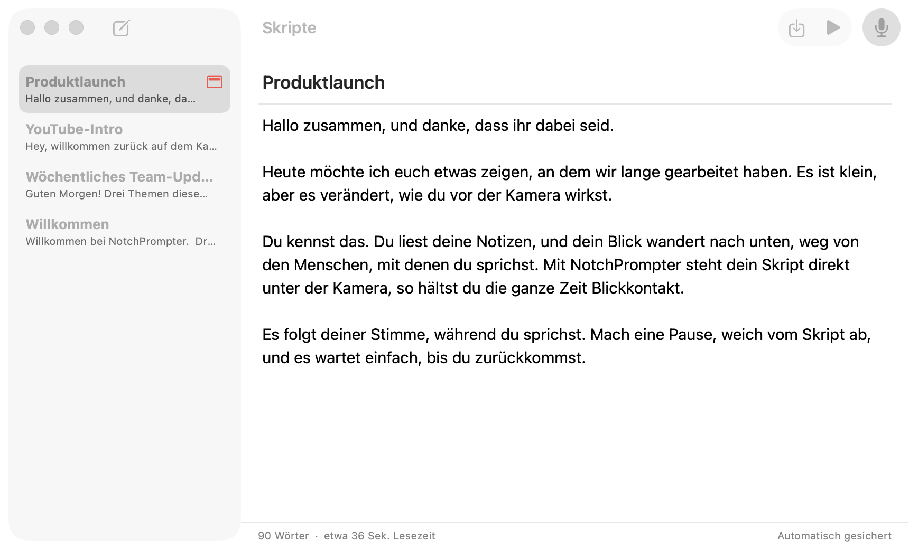
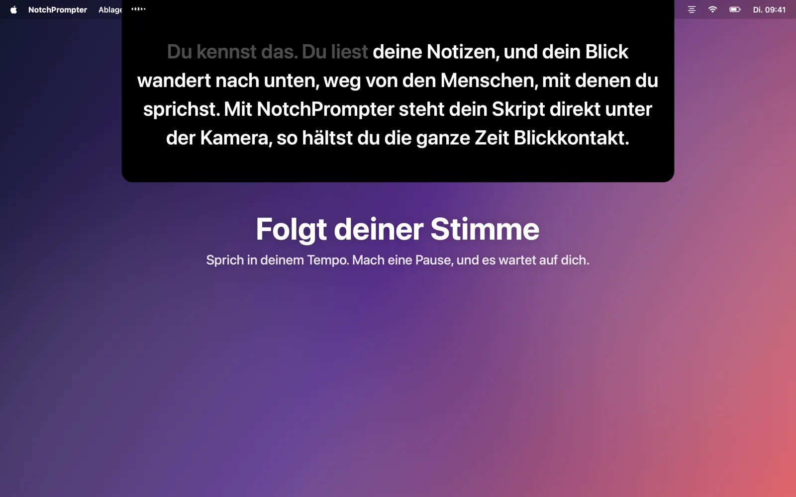
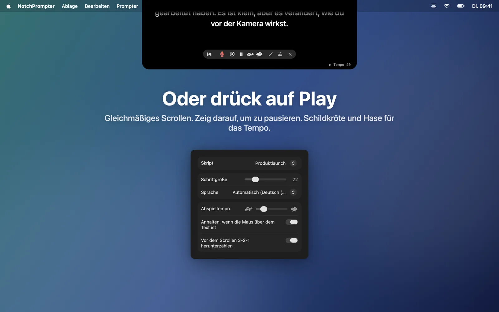
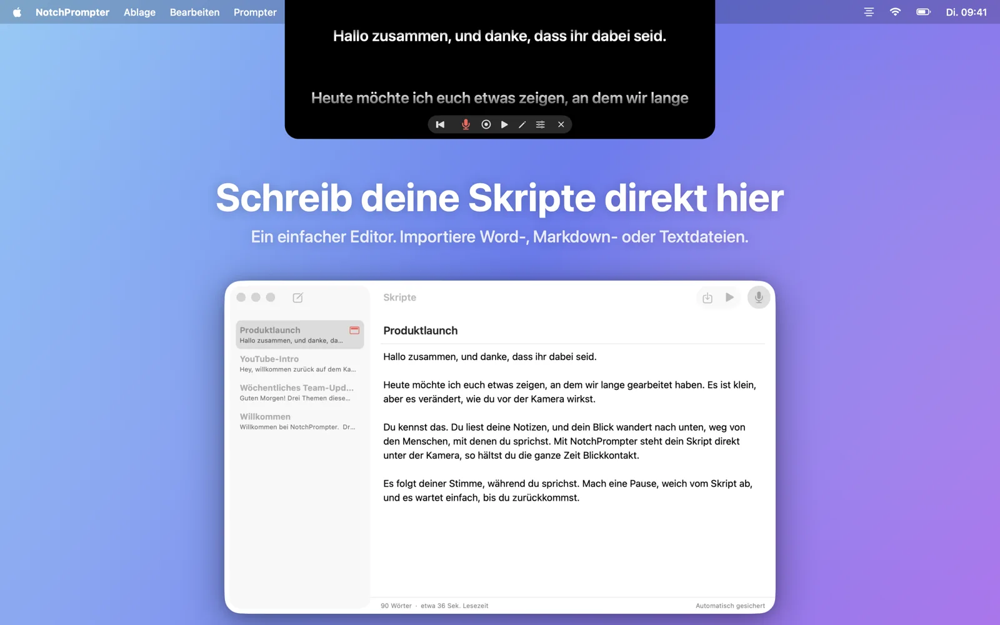
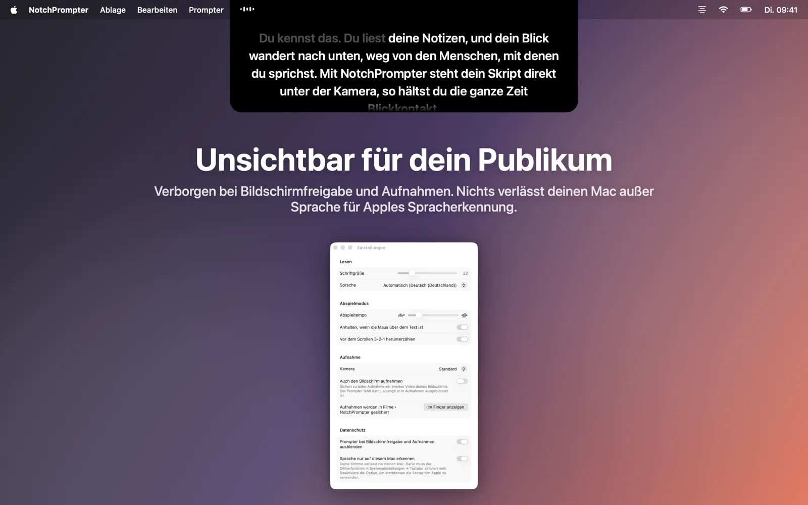
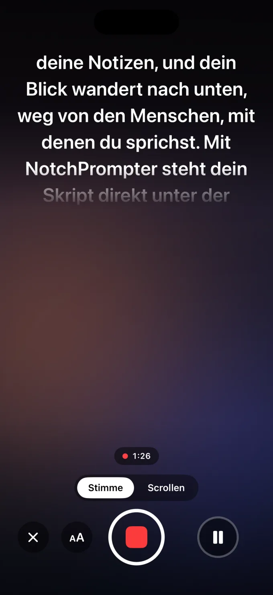

Halte Blickkontakt, während du liest
NotchPrompter hängt dein Skript direkt unter die Kamera und folgt deiner Stimme. In jeder Sprache, auch wenn du etwas überspringst, und komplett auf deinem Mac.
Kostenlos und Open Source. Für macOS 15 Sequoia oder neuer. Am besten auf einem MacBook mit Notch, und auf jedem Mac mit einer Kamera oben am Bildschirm.
In Aktion sehen
Lesen, pausieren, weiterspringen. Der Prompter hält mit dir Schritt.
Alles, was du brauchst. Nichts, was stört.
Ein kleines schwarzes Feld unter deiner Kamera, ein paar klare Tasten, ein kleiner Editor für deine Skripte und eine Aufnahmetaste.
Folgt deiner Stimme
Klick auf das Mikrofon und sprich los. Die nächsten Wörter stehen immer direkt unter der Kamera. Was du schon gesagt hast, wird ausgeblendet.
Jede Sprache, automatisch
NotchPrompter erkennt, in welcher Sprache dein Skript ist, und hört genau darauf. Englisch, Norwegisch, Deutsch, Spanisch, Japanisch und Dutzende mehr.
Bleibt dran, wenn du springst
Lass einen Satz aus, änder ein Wort, sag „äh“. Es findet, wo du bist, und springt mit dir weiter. Machst du eine Pause, wartet es.
Oder drück auf Play
Gleichmäßiges Scrollen mit 3-2-1-Countdown. Zeig mit dem Mauszeiger darauf, um zu pausieren, und stell mit Schildkröte und Hase das Tempo ein.
Integrierter Editor
Schreib alle deine Skripte und bewahre sie an einem Ort auf. Importiere Word-, Markdown-, RTF- oder Textdateien. Wird automatisch gesichert.
Nimm dich auf
Klick auf Aufnehmen, um dich beim Lesen mit Kamera und Mikrofon zu filmen. Jede Aufnahme wird als Film in deinem Ordner „Filme“ gesichert.
Unsichtbar für dein Publikum
Verborgen bei Bildschirmfreigabe, Bildschirmfotos und Aufnahmen. Nur du kannst ihn sehen.
Läuft komplett auf deinem Mac
Sprache wird auf deinem Mac erkannt, nicht in der Cloud. Kein Account, kein Tracking. Deine Skripte und Aufnahmen verlassen nie deinen Mac.
Deine Skripte, nur einen Klick entfernt
Klick im Prompter auf den Stift, um den Editor zu öffnen. Wähl ein Skript, klick auf das Mikrofon und leg los.
- Schreib dein Skript, füge es ein oder importiere eine Datei.
- Klick auf Mit Stimme lesen.
- Schau in die Kamera und sprich.

Gemacht für die Kamera
Videocalls, YouTube, Kurse, Webinare und Pitches.




Auch auf dem iPhone
NotchPrompter für iPhone zeigt dein Skript direkt unter der Frontkamera, folgt deiner Stimme und filmt dich. Jede Aufnahme landet direkt in Fotos.
Du kannst es kostenlos testen. Der Modus „Scrollen“, der Editor und das Übungsskript sind kostenlos, und du bekommst 3 kostenlose Aufnahmen, bei denen der Text deiner Stimme folgt und du dich filmst. Danach schaltet ein einziger Kauf alles für immer frei: 49 kr in Norwegen oder der entsprechende Betrag in deiner Währung. Kein Abo.
Die iPhone-App ist nicht Open Source. Sie nutzt dieselbe Open-Source-Sprach-Engine wie die Mac-App. Bald im App Store, für iOS 18 oder neuer.

Fragen
Ist es wirklich kostenlos?
Ja. NotchPrompter für Mac ist kostenlos und Open Source unter der MIT-Lizenz. Keine Werbung, kein Abo, kein Account. Der Quellcode ist auf GitHub. Dort kannst du Fehler melden, Funktionen vorschlagen oder mitentwickeln.
NotchPrompter für iPhone kannst du kostenlos testen. Mit einem einmaligen Kauf nutzt du „Stimme folgen“ und die Aufnahme weiter. Mehr erfahren.
Funktioniert es auch ohne Notch?
Ja. Auf einem Mac ohne Notch hängt der Prompter oben am Bildschirm unter der Menüleiste, also immer noch nah an der Kamera.
Welche Sprachen unterstützt die Stimmverfolgung?
Dutzende, darunter Englisch, Norwegisch, Deutsch, Französisch, Spanisch, Chinesisch und Japanisch. NotchPrompter erkennt, in welcher Sprache dein Skript ist, und hört auf diese Sprache. Du musst also nichts einstellen. In den Einstellungen kannst du eine andere Sprache wählen.
Sehen andere den Prompter, wenn ich meinen Bildschirm teile?
Nein. Standardmäßig ist er bei Bildschirmfreigabe, Bildschirmfotos und Aufnahmen verborgen. Wenn du ihn zeigen willst, kannst du das in den Einstellungen ausschalten.
Geht irgendetwas in die Cloud?
Nein. Sprache wird auf deinem Mac erkannt (wenn Diktat in den Systemeinstellungen aktiviert ist), und NotchPrompter hat keine Server. Die Stimmverfolgung speichert nie Audio. Nur wenn du auf Aufnehmen klickst, wird ein Film gesichert, und zwar in deinem eigenen Ordner „Filme“. Lies die Datenschutzerklärung.
Welche Tastaturkurzbefehle gibt es?
Klick auf den Prompter, dann: Leertaste Abspielen/Pause, V Stimme, C Aufnahme, R zurück zum Anfang, ↑ ↓ Tempo, + − Textgröße, E Editor, Esc Stopp.